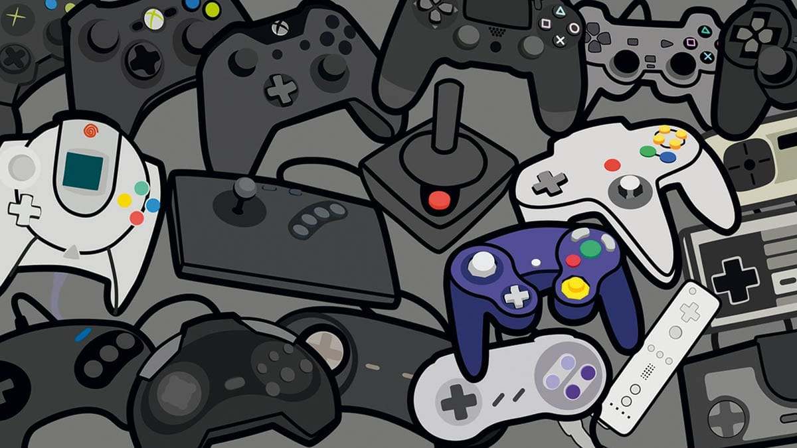

Mes Passions
Le Basket

Le basket-ball ou basketball, fréquemment désigné en français par son abréviation basket,
est un sport collectif de balle opposant deux équipes de cinq
joueurs sur un terrain rectangulaire.
Le Beataking
{kind=link}
Le Beat making est la création de pistes musicales et rythmiques appelées Beats,
très présent dans le Hip Hop et le Rap actuel. Le Beatmaker,
également appelé Producteur créé, compose et/ou arrange une partie musicale existante pour enregistrer ses propres morceaux.
Pour de nombreux musiciens, la création de beats pour un titre est la partie de la composition et de l'arrangement qu'ils apprécient le plus.
Avec la basse, les beats créent le groove et donc la base d'une chanson forte.
Jeux Videos
{kind=link}
L'objectif principal des jeux vidéo est de motiver le joueur à compléter les différents niveaux afin de réussir le jeu.
Des études montrent un effet sur la capacité de l'enfant à conserver sa motivation
à long terme et à persévérer jusqu'à la réalisation d'une tâche.